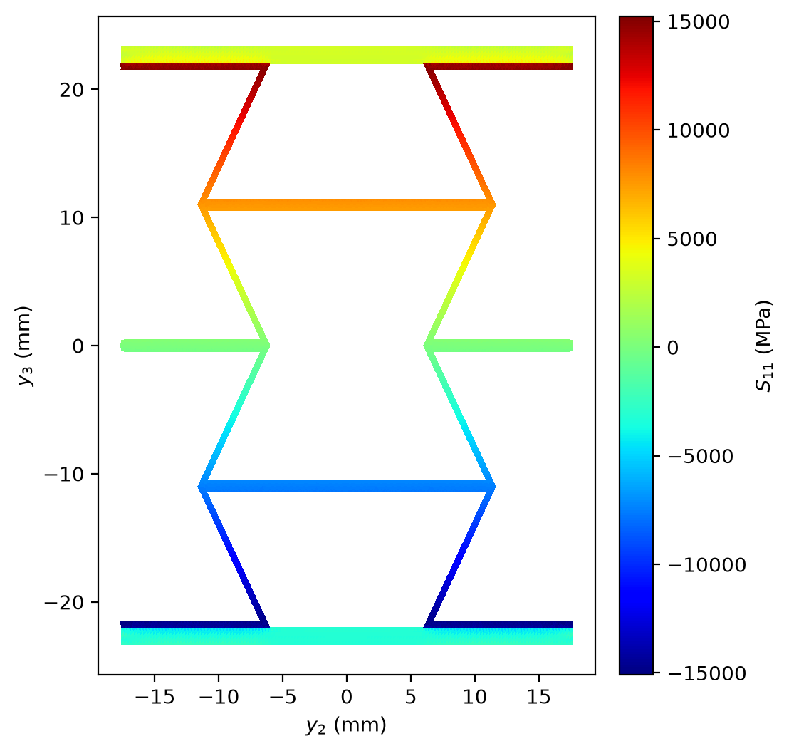
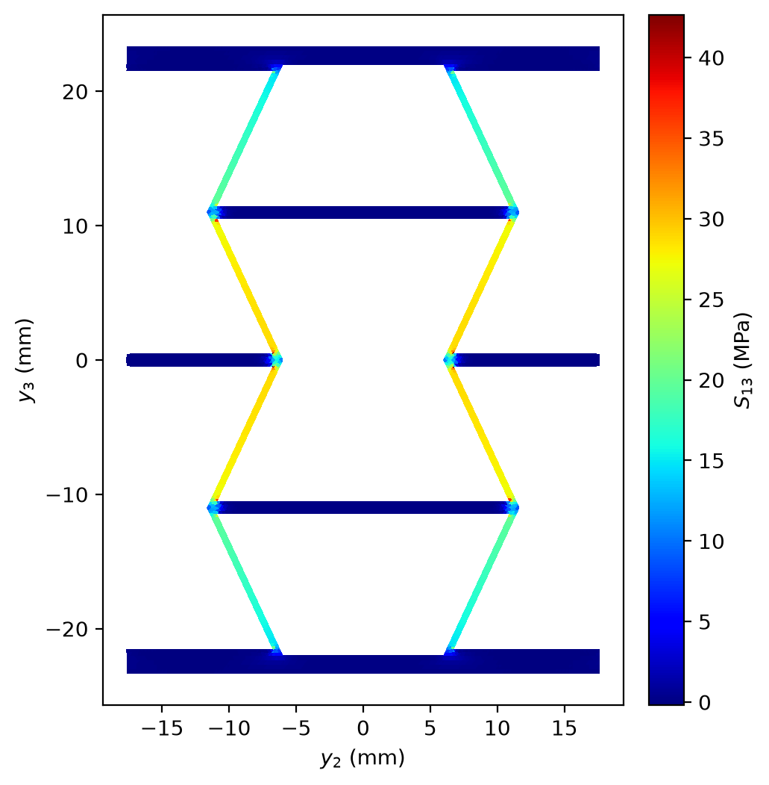

08 Beam dehomogenization#
Dehomogenization recovers the local strain and stress inside a beam cross-section under the six beam forces. This tutorial applies them to the cross-section of the beam tutorial.
Note
This page needs OpenSG main with the fix of the beam dehomogenization, version 2.1.1. Earlier versions recovered the
shear forces F2 and F3 wrongly. With the fix, a D run prints the line recovery : generalized Timoshenko, as in
the console below. If your run does not print it, run git pull in the root of the repository and run again.
The macro state: a .ff file#
A D run reads <base>.ff next to the yaml. The example folder examples/OpenSG-solid/8_get_beam_dehom_from_SG
holds RHC_SW_2UC_45.yaml, the mesh and the materials of the beam tutorial, in mm and MPa. It ships
RHC_SW_2UC_45.ff:
# OpenSG dehomogenization macro state -- read by `opensg_solid RHC_SW_2UC_45.yaml D`
# The SG yaml describes the STRUCTURE; this file carries the LOADING.
u: [0.0, 0.0, 0.0] # macro displacement u1 u2 u3
theta: [0.0, 0.0, 0.0] # macro rotation t1 t2 t3 [rad] (about y1 y2 y3)
C: [[1.0, 0.0, 0.0], # direction cosines of the macro frame
[0.0, 1.0, 0.0], # (identity = unrotated; overrides theta)
[0.0, 0.0, 1.0]]
# generalized macro forces, beam [F1 F2 F3 M1 M2 M3]
FF: [9899.3087, 6.9807273, 0.0032515777, -31861.511, 21895742, -959.63908]
key |
meaning |
|---|---|
|
the macro displacement |
|
the macro rotation, in rad |
|
the direction cosines of the macro frame, here the identity |
|
the beam forces |
These forces are mostly an extension F1 and a bending moment M2. They are the law of the beam tutorial times the
beam strain in the yaml header, epsilon_bar: [0.001, 0.0, 0.0, 0.0, 0.01, 0.0]. A .ff next to the yaml takes
the place of that line.
OpenSG reads FF: and appends the same forces to the file under 1:, the key it uses for forces:
# upgraded: 1: is the force identifier (== FF)
1: [9899.3087, 6.9807273, 0.0032515777, -31861.511, 21895742, -959.63908]
A 0: line gives the beam strains [eps11 gam12 gam13 kappa1 kappa2 kappa3] instead.
Run it#
Run it in the example folder. From the root of the repository:
cd examples/OpenSG-solid/8_get_beam_dehom_from_SG
opensg RHC_SW_2UC_45.yaml D --global
D homogenizes the cross-section, then recovers the local fields. --global writes the stress and the strain in
the SG axes, which are the beam axes 1, 2 and 3 here, for every element. Without the flag OpenSG writes them in the
ply axes of each element.
============================================================================
OpenSG -- a multiscale structural analysis tool based on the Mechanics of
Structure Genome (MSG), developed by the Multiscale Structural Mechanics
Group led by Prof. Wenbin Yu at Purdue University
============================================================================
input : .../8_get_beam_dehom_from_SG/RHC_SW_2UC_45.yaml
msg : solid (2D SG)
dofs : 12753
analysis : dehom
macro : beam, shear-refined
note: RHC_SW_2UC_45.ff upgraded in place (legacy FF: -> 1:)
frames : none in the file (material angle only)
solver : direct
Timoshenko Beam Stiffness Matrix [eps11 gam12 gam13 kappa1 kappa2 kappa3]:
[[ 9.89929e+06 6.99702e+03 1.25764e+01 -7.70653e-01 2.27402e+00
-8.67148e-01]
[ 6.99702e+03 1.90737e+06 5.93202e+01 -3.40415e+01 -1.62972e+00
-6.06680e-02]
[ 1.25764e+01 5.93202e+01 9.36137e+05 -8.47824e+01 -9.32482e-01
8.59438e-01]
[-7.70653e-01 -3.40415e+01 -8.47824e+01 2.97730e+08 -3.18615e+06
-7.30578e+03]
[ 2.27403e+00 -1.62972e+00 -9.32482e-01 -3.18615e+06 2.18957e+09
-9.59638e+04]
[-8.67149e-01 -6.06680e-02 8.59438e-01 -7.30578e+03 -9.59638e+04
9.28993e+08]]
macro state: 1:/FF (beam force, seeds the recovery chain directly)
recovery : generalized Timoshenko, F' = R1 F -- zeroth-order V0 + first-order V1 warping (prismatic, no distributed load)
expected resultants [F1 F2 F3 M1 M2 M3] = [9899.292175 6.9807273 0.0032515777 -31861.51034 21895742 -959.63908]
= applied [9899.3087 6.9807273 0.0032515777 -31861.511 21895742 -959.63908] + Delta F_cl on [F1 M1 M2 M3] = [-0.0165249496 0.0006630608038 -7.099525889e-06 -1.482315915e-08] (the classical excess of the generalized-Timoshenko recovery, as in VABS 4.1; it depends on the section origin)
output frame: GLOBAL (SG axes)
export_gauss: 19920 points -> RHC_SW_2UC_45_dehom.txt / .vtk / _global.SM / _global.EM / .U / _elemental_global.SM / _elemental.U (global frame)
Local field files are computed and stored.
Time taken: 5.25 sec
The run prints the Timoshenko law of the beam tutorial. The macro state line says that the forces of the .ff
drive the recovery. The expected resultants line gives the six forces that the recovered stress adds up to. They
are the applied forces plus Delta F_cl, a small classical excess of this recovery. The last section comes back
to it.
The files#
file |
content |
|---|---|
|
the beam law of the beam tutorial. It replaces the shipped file |
|
the mesh picture of the beam tutorial |
|
the shipped |
|
strain and stress at every Gauss point, one row each: 19920 rows |
|
the SG mesh with the mean strain and stress of each element, 6640 triangles, for ParaView |
|
stress at every Gauss point |
|
strain at every Gauss point |
|
displacement at every Gauss point |
|
stress, the mean of each element |
|
displacement, the mean of each element |
Read the stress#
The first lines of RHC_SW_2UC_45_dehom_global.SM:
# RHC_SW_2UC_45_dehom beam dehom stress (units follow the SG input system)
# lattice: element Gauss points (19920), SwiftComp storage reordered to 11 22 33 12 13 23 on write; frame: global (SG axes); z = 0 is the reference surface
# x[m] y[m] z[m] S11[Pa] S22[Pa] S33[Pa] S12[Pa] S13[Pa] S23[Pa]
0.000000e+00 1.754067e+01 2.329375e+01 2.663813e+03 -1.158321e+02 6.623667e+01 -3.490355e+02 2.264827e+02 5.985825e+01
The columns are the position
x y z, thenS11 S22 S33 S12 S13 S23.x,yandzare y1, y2 and y3. A cross-section leavesxat 0.yandzare the coordinates y2 and y3 of the mesh picture.The column labels say Pa and m. The numbers are in the units of the yaml: MPa and mm here.
There is one row for each of the 19920 Gauss points, three in each of the 6640 triangles.
.EM has the same layout with E11 E22 E33 E12 E13 E23. Its shear strains are engineering strains, twice the
tensor strains: on the core, S12/E12 is 26538.5 MPa, the shear modulus of material 3. .U holds U1 U2 U3 in mm.
Here that is the warping of the section alone, because u is zero and C is the identity in the .ff.
The .txt holds the same strain and stress in the order xx yy zz yz xz xy, one row per Gauss point. Its xx,
yy and zz are the axes 1, 2 and 3, as in the .SM. Its Coord_X and Coord_Y are y2 and y3:
GP_Index Coord_X Coord_Y Eps_xx Eps_yy Eps_zz Eps_yz Eps_xz Eps_xy Sig_xx Sig_yy Sig_zz Sig_yz Sig_xz Sig_xy
1 1.754067e+01 2.329375e+01 2.339375e-01 -1.135181e-01 -3.121644e-02 2.689543e-02 6.855154e-02 9.623707e-02 2.663813e+03 -1.158321e+02 6.623667e+01 5.985825e+01 2.264827e+02 -3.490355e+02
Draw a stress field#
The .vtk opens in ParaView. A short Python script with meshio, matplotlib and PyYAML draws one of its fields. It
also adds the stress up to the six beam forces, as the last section explains.
plot_beam_dehom.py:
"""Draw one stress field of an OpenSG beam dehomogenization from its .vtk, and print the six beam forces that
the stress adds up to.
Run it in the folder of the run: python plot_beam_dehom.py RHC_SW_2UC_45 S11
"""
import struct
assert struct.calcsize("P") == 8 # OpenSG runs on 64-bit Python
import sys
import matplotlib.pyplot as plt
import meshio
import numpy as np
import yaml
stem, field = sys.argv[1], sys.argv[2] # the base name of the run, and S11, S12 or S13
m = meshio.read(stem + "_dehom.vtk")
tri = m.cells_dict["triangle"] # one triangle per SG element
name = {"S11": "Sig_xx", "S12": "Sig_xy", "S13": "Sig_xz"}[field]
s = np.ravel(m.cell_data_dict[name]["triangle"]) # the element mean of the field
x, y = m.points[:, 0], m.points[:, 1] # the node coordinates y2 and y3
fig, ax = plt.subplots(figsize=(5.6, 6.0))
tpc = ax.tripcolor(x, y, tri, facecolors=s, cmap="jet", edgecolors="none")
ax.set_aspect("equal")
ax.set_xlabel("$y_2$ (mm)")
ax.set_ylabel("$y_3$ (mm)")
fig.colorbar(tpc, ax=ax, pad=0.04, fraction=0.06).set_label("$S_{%s}$ (MPa)" % field[1:])
fig.savefig("%s_dehom_%s.png" % (stem, field), dpi=200, bbox_inches="tight")
print("%s = %.1f to %.1f MPa" % (field, s.min(), s.max()))
# the six beam forces: the stress at the three Gauss points of each triangle, each weighted by a third of its area
sg = yaml.load(open(stem + ".yaml"), Loader=getattr(yaml, "CSafeLoader", yaml.SafeLoader))
p = np.asarray(sg["nodes"])[np.asarray(sg["cells"])][:, :, :2] # the corners y2 y3 of every triangle
d1, d2 = p[:, 1] - p[:, 0], p[:, 2] - p[:, 0]
w = np.repeat(0.5 * np.abs(d1[:, 0] * d2[:, 1] - d1[:, 1] * d2[:, 0]) / 3, 3)
g = np.loadtxt(stem + "_dehom_global.SM") # x y z S11 S22 S33 S12 S13 S23 at every Gauss point
assert np.abs(g[:, 1:3].reshape(-1, 3, 2).mean(axis=1) - p.mean(axis=1)).max() < 1e-4 # 3 rows per triangle
y2, y3, s11, s12, s13 = g[:, 1], g[:, 2], g[:, 3], g[:, 6], g[:, 7]
F = [np.sum(w * s11), np.sum(w * s12), np.sum(w * s13),
np.sum(w * (y2 * s13 - y3 * s12)), np.sum(w * y3 * s11), -np.sum(w * y2 * s11)]
for n, f, u in zip(("F1", "F2", "F3", "M1", "M2", "M3"), F, ("N", "N", "N", "N mm", "N mm", "N mm")):
print("%s = %.8g %s" % (n, f, u))
Save it in the folder of the run and run it there:
python plot_beam_dehom.py RHC_SW_2UC_45 S11
S11 = -15083.6 to 15223.7 MPa
F1 = 9899.2931 N
F2 = 6.9805926 N
F3 = 0.0032709825 N
M1 = -31861.543 N mm
M2 = 21895742 N mm
M3 = -959.5795 N mm


S11 is the stress along axis 1, the beam axis, normal to the picture. M2 bends the section about axis 2, so S11 grows with y3, from compression at the bottom to tension at the top. Material 3, the honeycomb core, carries -15083.6 to 15223.7 MPa, the most in its walls at the top and at the bottom. The face plies, materials 1 and 2, carry -4833.4 to 4877.4 MPa and -4261.6 to 4299.8 MPa.
This load is large: the strain E11 reaches 0.2339375 in the top face. The recovery is linear, so the field scales with the load.
The shear force F3 alone#
The shipped load holds almost no shear. To see the shear stress, apply F3 = 1000 N alone. OpenSG reads
<base>.ff, so give the yaml a second name for this load:
cp RHC_SW_2UC_45.yaml RHC_SW_2UC_45_F3.yaml
Save RHC_SW_2UC_45_F3.ff next to it. It gives the forces under 1:,
so OpenSG reads it as it is:
# OpenSG dehomogenization macro state: the shear force F3 alone
u: [0.0, 0.0, 0.0] # macro displacement u1 u2 u3
theta: [0.0, 0.0, 0.0] # macro rotation t1 t2 t3 [rad] (about y1 y2 y3)
C: [[1.0, 0.0, 0.0], # direction cosines of the macro frame
[0.0, 1.0, 0.0],
[0.0, 0.0, 1.0]]
# beam forces [F1 F2 F3 M1 M2 M3], in N and N mm
1: [0.0, 0.0, 1000.0, 0.0, 0.0, 0.0]
Run it:
opensg RHC_SW_2UC_45_F3.yaml D --global
Up to the law, the console is that of the first run, with the new name in the input line and without the
upgrade note. Then it prints:
macro state: 1:/FF (beam force, seeds the recovery chain directly)
recovery : generalized Timoshenko, F' = R1 F -- zeroth-order V0 + first-order V1 warping (prismatic, no distributed load)
expected resultants [F1 F2 F3 M1 M2 M3] = [-0.01753897643 0 1000 0.1361123817 -0.001456607838 -3.338428361e-06]
= applied [0 0 1000 0 0 0] + Delta F_cl on [F1 M1 M2 M3] = [-0.01753897643 0.1361123817 -0.001456607838 -3.338428361e-06] (the classical excess of the generalized-Timoshenko recovery, as in VABS 4.1; it depends on the section origin)
output frame: GLOBAL (SG axes)
export_gauss: 19920 points -> RHC_SW_2UC_45_F3_dehom.txt / .vtk / _global.SM / _global.EM / .U / _elemental_global.SM / _elemental.U (global frame)
Local field files are computed and stored.
Time taken: 5.25 sec
The run writes the same files as the first one, with names that start with RHC_SW_2UC_45_F3. Draw S13, the
shear stress along axis 3:
python plot_beam_dehom.py RHC_SW_2UC_45_F3 S13
S13 = -0.2 to 42.6 MPa
F1 = -0.017538782 N
F2 = -6.2902467e-07 N
F3 = 1000 N
M1 = 0.13616164 N mm
M2 = -0.0014622993 N mm
M3 = -3.9311655e-06 N mm


The inclined walls of the honeycomb core carry the shear stress. Material 3, the core, carries 99.05 % of F3. The face plies carry the rest.
Check the resultants#
The script adds the stress up over the section, with the moments about the section origin:
It takes the stress and the position of every Gauss point from the .SM. The .SM lists three Gauss points in
each triangle, the points of the three-point rule. That rule gives each point a third of the area of its triangle
as its weight. The areas come from the nodes and the triangles of the yaml.
The shipped load:
force |
applied ( |
expected (D log) |
|---|---|---|
F1 (N) |
9899.3087 |
9899.292175 |
F2 (N) |
6.9807273 |
6.9807273 |
F3 (N) |
0.0032515777 |
0.0032515777 |
M1 (N mm) |
-31861.511 |
-31861.51034 |
M2 (N mm) |
21895742 |
21895742 |
M3 (N mm) |
-959.63908 |
-959.63908 |
force |
expected (D log) |
integrated (script) |
|---|---|---|
F1 (N) |
9899.292175 |
9899.2931 |
F2 (N) |
6.9807273 |
6.9805926 |
F3 (N) |
0.0032515777 |
0.0032709825 |
M1 (N mm) |
-31861.51034 |
-31861.543 |
M2 (N mm) |
21895742 |
21895742 |
M3 (N mm) |
-959.63908 |
-959.5795 |
F3 alone:
force |
applied ( |
expected (D log) |
|---|---|---|
F1 (N) |
0 |
-0.01753897643 |
F2 (N) |
0 |
0 |
F3 (N) |
1000 |
1000 |
M1 (N mm) |
0 |
0.1361123817 |
M2 (N mm) |
0 |
-0.001456607838 |
M3 (N mm) |
0 |
-3.338428361e-06 |
force |
expected (D log) |
integrated (script) |
|---|---|---|
F1 (N) |
-0.01753897643 |
-0.017538782 |
F2 (N) |
0 |
-6.2902467e-07 |
F3 (N) |
1000 |
1000 |
M1 (N mm) |
0.1361123817 |
0.13616164 |
M2 (N mm) |
-0.001456607838 |
-0.0014622993 |
M3 (N mm) |
-3.338428361e-06 |
-3.9311655e-06 |
Under F3 alone the stress adds up to F3 = 1000 N, and F2 is zero to the digits of the file. F1, M1 and M2 are not
zero. They match the expected line, not the zeros of the .ff. They are the classical excess Delta F_cl of the
generalized-Timoshenko recovery. VABS 4.1 has the same excess, and it depends on where the section origin is.
The .SM prints seven significant digits. Every difference between the integrated and the expected forces in the
tables is smaller than the largest error that this rounding can cause. Under the shipped load that error is
larger than Delta F_cl itself, -0.0165249496 N on F1. So that run cannot tell the applied forces from the
expected ones.
Go back to the root of the repository before the next tutorial:
cd ../../..